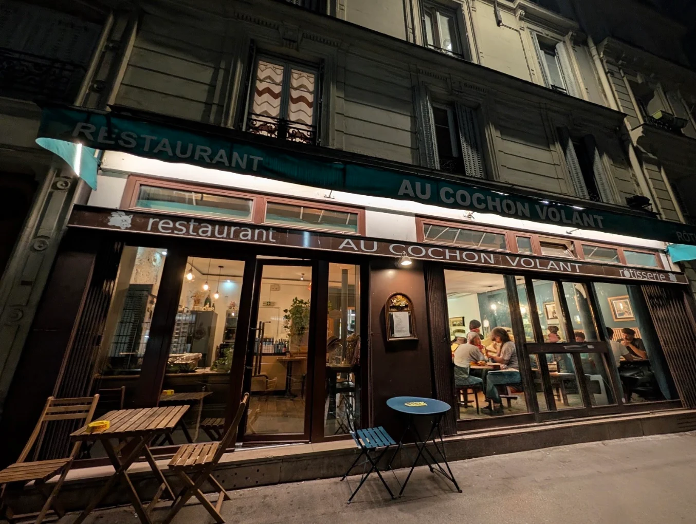

Au Cochon Volant
Rôtisserie · Paris 12e
Ici, les cochons volent.
On disait « quand les cochons voleront ». Rue Jules-César, à deux pas de Gare de Lyon, c'est chose faite.
Tous les jours, un cochon de lait tourne doucement sur la broche jusqu'à ce que sa peau craque. Autour de lui : terrines, pâté de tête, joue braisée et purée maison, frites, tiramisu. Une cuisine de produit, sans chichis, des assiettes généreuses et des vins à prix sages.
La salle est petite, l'accueil est grand. Venez en voisin, en voyageur entre deux trains, ou en bande affamée.
Conseil d'ami : le cochon de lait part vite. Venez tôt.
Ce qu'en disent les passagers
4,9/5 sur environ 700 avis Google
Extraits d'avis publics laissés sur Google, reproduits tels quels.
Point d'atterrissage
15 rue Jules-César75012 Paris
Métro Bastille (1, 5, 8), Gare de Lyon (1, 14, RER A et D), Quai de la Rapée (5).